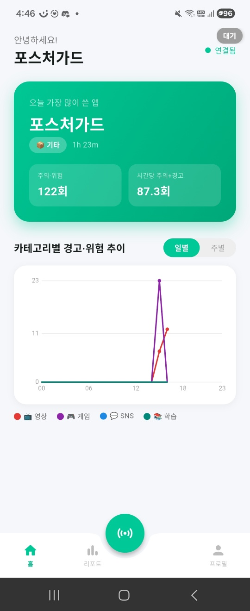
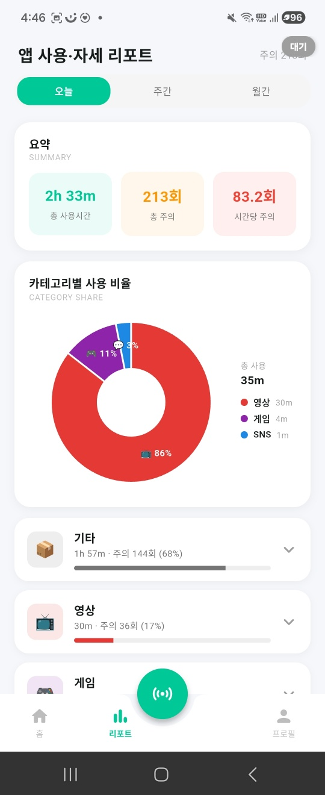
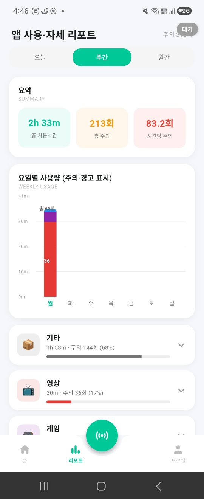
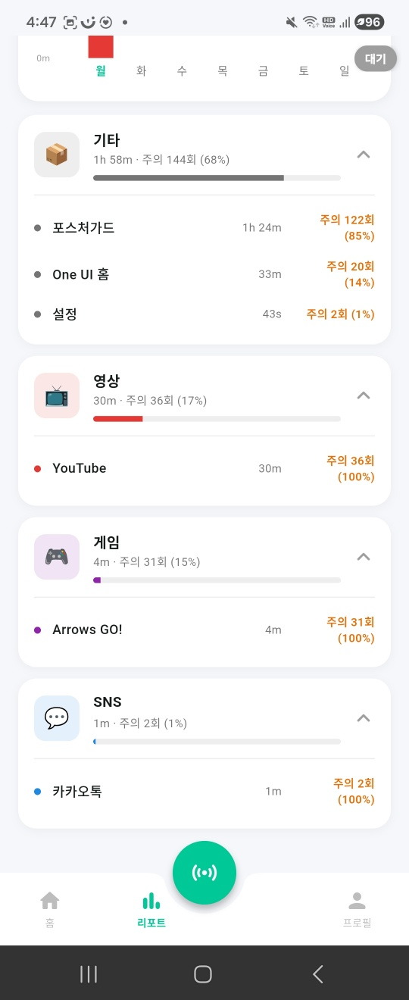
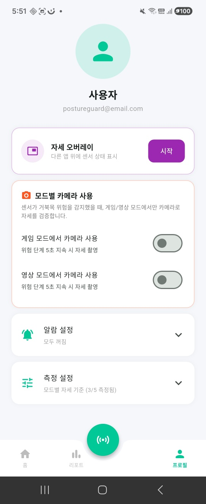

연결 상태, 오늘 많이 쓴 앱, 카테고리별 주의 추이를 보여주고 중앙 측정 버튼으로 측정을 시작한다.
화면 종류
영상앱 또는 게임앱 위에 모드 버튼이 뜬다. 주의 상태는 모드 버튼 옆에 잠깐 나타났다가 사라진다.
프로필에서 자세 오버레이 시작, 모드별 카메라 사용, 알람, 측정 기준을 설정한다.
오늘, 주간, 월간 탭에서 총 사용시간과 총 주의 횟수를 확인하고 카테고리별 앱 상세로 들어간다.
핵심 사용자 흐름
1. 홈 대기
연결됨 상태와 오늘의 주요 앱/주의 추이를 확인한다.

중앙 버튼 클릭
측정 시작
측정 시작
2. 측정 시작 ON
초록 버튼을 누르면 빨간 측정 상태로 바뀌고 센서 측정을 시작한다.
빨간 상태로 전환
센서 측정 시작
센서 측정 시작
측정 중
기록 수집
기록 수집
3. 앱 감지 오버레이
YouTube나 영상앱 위에 영상 모드가 표시되고, 측정 버튼으로 센서 측정을 시작한다.
영상 모드 표시
현재 앱 상태 안내
현재 앱 상태 안내
측정 버튼 클릭
측정 시작
측정 시작
4. 리포트 반영 주의
주의가 발생하면 앱, 카테고리, 시간 기준으로 저장되어 리포트에 반영된다.

주의 횟수
리포트 반영
리포트 반영
영상 카테고리
상세 확인
상세 확인
5. 오늘 리포트 오늘
카테고리별 사용 비율과 주의 횟수를 한눈에 확인한다.
영상 30m
주의 36회
주의 36회
6. 주간 리포트 주간
요일별 사용량과 주의 횟수를 막대 그래프로 비교한다.

오늘 / 주간 / 월간
탭 전환
탭 전환
7. 카드 펼침 상세
카테고리 카드를 펼쳐 앱별 사용 시간과 주의 횟수를 본다.

앱별 상세
주의 횟수 표시
주의 횟수 표시
8. 앱 설정 설정
프로필에서 자세 오버레이, 모드별 카메라 사용, 알람, 측정 기준을 설정한다.

자세 오버레이
시작 버튼
시작 버튼
모드별 카메라
사용 설정
사용 설정